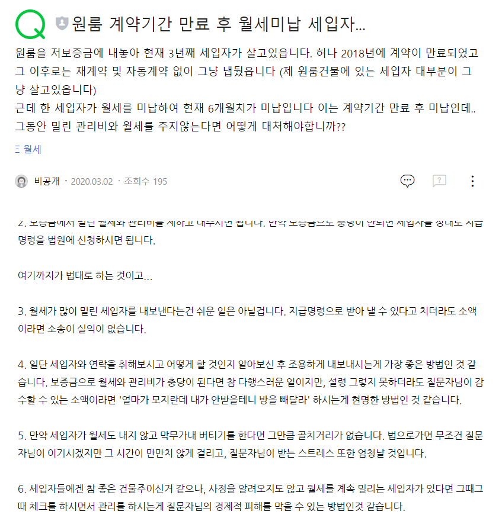
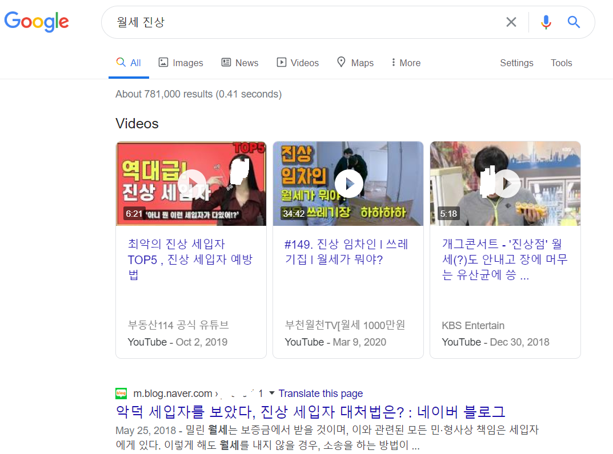
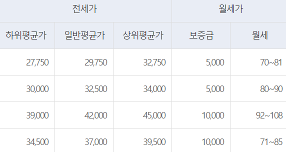

월세 받으려 오피스텔 투자했던 친구 이야기
게시: 2020-08-13T06:30:52+09:00
오늘 포스팅은 그냥 아무렇게나 정리 안하고 쓰는 글입니다. 주변 사람에게 잡담으로 이야기들이라 사실 여부는 장담하지 못하니 그냥 딱 잡담거리로 읽으시기 바랍니다. 직장 동료 중에 월세를 받기 위해 오피스텔에 투자를 한 친구가 있었습니다. 원래 월세 세입자를 받을 때는 이 사람이 어떤 사람인지 월세 안 밀릴 사람인지 정말 잘 가려 받아야 합니다. 그런데 이 친구가 처음에 멋 모르고 공실 내지 않고 월세를 빨리 받으려는 욕심에 아무나 받았답니다. 그랬더니 얼마 안 가서 월세 내는 날짜가 조금씩 밀리기 시작하더랍니다. 가령 매월 25일이 월세 내는 날이면, 30일에 냈다가, 그 다음달 10일에 냈다가 하는 식으로요. 마치 쌍팔년도에 버스 회수권 10장을 11장으로 잘라 쓰던 수법 같은 거지요. 그래서 제 친구는 '이런 식이면 1달치 밀린 거다'라고 이야기를 하려고 전화를 했답니다. 그랬더니 이때를 기다렸다는 듯이 세입자가 온갖 불만을 토해내면서 심지어 형광등이 나갔으니 그걸 빨리 갈아달라고 하더랍니다. 제 친구도 화가 나서 서로 안 좋은 기분으로 통화를 마쳤는데... 진짜 문제는 그 다음부터 벌어졌습니다. 아예 월세를 안 내기 시작한 겁니다. 하지만 처음엔 제 친구도 별 걱정을 하지 않았답니다. '뭐 계약기간도 얼마 안 남았고, 보증금에서 밀린 월세를 제하고 보증금을 돌려주면 되니까...' 하는 생각이었지요. 그런데 계약 기간이 다 되어 내보내려고 해도 이 진상 세입자가 안 나가더랍니다. 집 보러 온 사람에게 문도 안 열어주고요. 너무나 어이가 없어서 결국은 져녁에 이 세입자를 직접 찾아갔습니다. 다행히 세입자가 집에 있어서 만나 보았는데, 완전히 배째라는 입장이더랍니다. 그러면서 이런저런 임차인 보호 규정에 대해서 이야기를 줄줄 늘어놓는데, 제 친구는 이 사람이 변호사인가 싶을 정도였답니다. 알고 보니 요즘은 네이버 지식인 등에서 임차인들이 서로 묻고 답하면서 자신들의 권리 보호에 플러스 알파까지 뜯어내는 방법을 너무 잘 알고 있더라는 것이지요.

(네이버 지식인에 올라온 어떤 냉엄한 답변...) 실제로 보증금이 억 단위로 크지 않은데 임차인이 그냥 뻗대기로 나오면 방법이 마땅치 않습니다. 물론 명도소송을 하면 되는데 그걸 언제 다 합니까 ? 오히려 이 뻔뻔스러운 임차인이 먼저 명도소송 이야기를 꺼내면서 이렇게 제 친구를 구슬리더랍니다. "...날 내보내려고 명도소송하면 소송비만 더 들고, 그 동안 새로운 임차인 구하지도 못하고, 뭐하러 그래요? 그냥 저한테 섭섭하지 않게 좀 보태주시면 제가 순순히 집을 빼줄테니까, 우리 좋게좋게 이야기해봅시다." 그런데, 아무리 머리를 굴려보아도 정말 이 뻔뻔스러운 임차인 이야기가 맞는 말이더랍니다. 결국 밀린 월세 받으러 갔다가, 오히려 이 임차인에게 제발 방 좀 빼달라고 이사비조로 몇십만원을 주고 왔다는 웃픈 이야기였습니다.

(구글에서 '월세 진상'이라고 검색할 때, 과연 임차인 진상이 더 많은지 임대인 진상이 더 많은지 쉽게 보실 수 있습니다.)
보통 전세는 집주인이 갑입니다. 제 주변에서도 다른 집으로 이사가기 위해 잔금을 치러야 해서 전세금을 돌려달라고 했더니 집주인이 "다음 세입자가 들어와야 전세금을 빼주지, 난 돈없어!"라며 뻔뻔스럽게 버티는 집주인 이야기는 많이 들었습니다. 그러나 월세는 반대로, 뻔뻔스러운 임차인이 집주인에게 진상질을 부리는 경우가 또 의외로 많답니다. 가끔 가다 인터넷 커뮤니티를 보면 착한 집주인이 임차인들에게 크리스마스에 케익을 선물한다는 이야기가 가끔 나오는데, 그게 사실은 집주인이 착한 것도 있겠으나 세입자들이 월세 안 밀리고 꼬박꼬박 내는 착한 세입자인 경우일 것입니다. 그런 양질의 세입자라면 꼭 붙잡아 둘 필요가 있으니 집주인이 어장관리를 하는 것이지요. 임대차3법에 반발해서 전세를 월세로 돌리는 집주인이 늘고 있다는 기사가 요즘 나오던데, (저같은 아마추어가 취미로 쓰는 블로그도 아니고) 그런 기사를 내려면 조사된 통계치를 근거로 들면서 내야지 그냥 신문사의 감으로 기사를 쓰는 것은 옳지 않다고 생각합니다. 실제로 그런 집주인이 얼마나 되는지는 모르겠어요. 그렇게 전세금 돌려주고 월세로 전환하려면 목돈을 구해야 할텐데 그 돈을 어디서 구할지도 의문이지만, 진상 부리는 월세 임차인들이 의외로 많고 전세와는 달리 월세는 집주인이 아니라 임차인이 갑인 경우가 꽤 있다는 점을 염두에 두셔야 합니다. *PS1. 최근에 또 이런 취지의 기사를 읽었습니다. "전세보증금은 나중에 돌려받을 수 있지만, 월세는 매달 꼬박꼬박 나가서 없어지는 돈인데 여당은 이걸 이해를 못한다" 실은 이거야말로 서민의 목소리가 아니라 먹고 살만한 중산층 입장에서 하는 소리에 불과하다고 저는 생각합니다. 저건 이미 2~3억을 모았거나, 혹은 넉넉한 부모님이 2~3억의 전세금을 보태주는 사람에게나 해당하는 소리입니다. 진짜 서민들은 2~3억 전세금이 없습니다. 중산층이지만 서민이라고 스스로 생각하는 서민이 아니라 진짜 서민들은 모아둔 돈이 없기 때문에 전세를 구하려면 은행에서 대출을 받아야 합니다. 다행히 서민 주거 안정 정책 때문에라도 전세대출은 승인 받기도 쉽고 또 이자도 비교적 낮은 편입니다. 그렇게 은행에서 대출을 받아서 전세금을 내고, 보통은 원금은 갚지 못하고 은행에 월 얼마씩 대출 이자만 상환합니다. 2~3억 되는 원금을 2년 안에 상환할 수 있다면 그건 정말 서민이 아니지요. 2년 후에 전세 기간이 만료되면, 은행은 전세대출금 원금을 회수합니다. 그러니까 전세냐 월세냐의 차이는 임차인이 집주인에게 월세를 내느냐 은행에게 대출금 이자를 내느냐의 차이입니다. 물론 매달 갚아야 하는 전세대출금의 이자가 월세보다 더 쌉니다. 아래 그림의 경우를 보면, 월세를 내면 대략 75만원이고 (보증금 5천만원을 제외하고 계산하면) 전세대출금 월이자는 3% 이율 적용할 때 약 62만원 정도입니다. 그러니까 월세가 전세대출금 이자보다 월 13만원, 즉 연 156만원 더 비싼 것입니다.

그러나 전에도 이야기했지만 전세 제도는 집없는 서민을 위해서는 양날의 칼입니다. 그렇게 전세금이라는 물이 시장에 흘러들면 그 수량만큼 집값이라는 배는 더 높이 뜨게 되니까요. 아마 연 156만원보다 훨씬 더 빠른 속도로 떠오를 것입니다. 서민의 내집 마련의 꿈은 그만큼 더 멀어지는 것입니다. 다만 위의 '오피스텔 월세 받는 이야기'에서 보셨듯이 월세를 놓는 것은 골치도 아프고 진상 임차인을 만날 위험도 꽤 있기 때문에, 그 때문에라도 월세액이 전세대출금 이자 상환액보다는 좀 높을 수 밖에 없습니다. 자본주의 세계에서는 위험이 있는 곳에 수익이 있는 법이니까요. (도박은 아니에요... 그건 무조건 잃는 게임.)
*PS2. 아마 댓글에 '세입자 입장에서는 전세보다 월세가 낫다는 이야기냐' 라고 하실까봐... 아닙니다. 분명히 세입자에게는 (위의 경우라면) 연 156만원 어치만큼 전세가 더 유리합니다. 이 본문 글은 철저하게 집주인 입장에서 집주인 걱정해주는 글입니다.